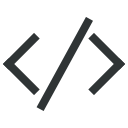
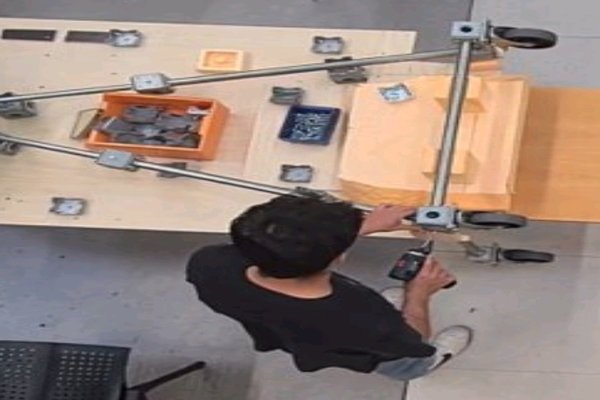
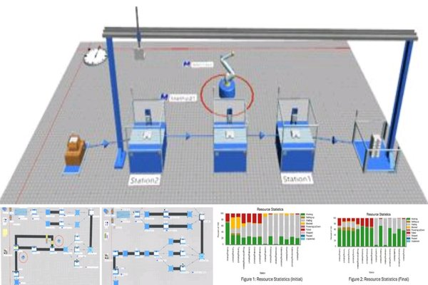
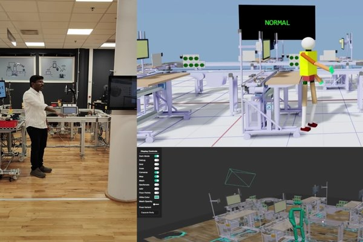
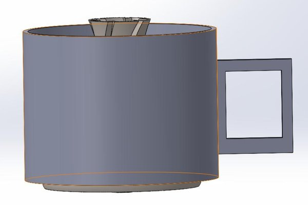
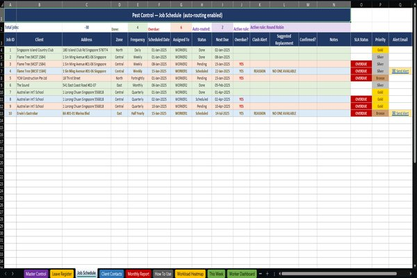
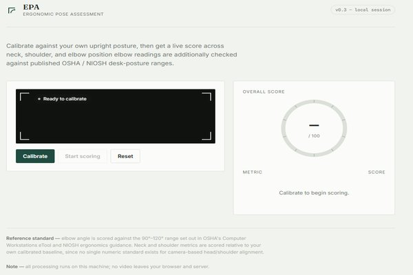

HELLO, I AM


I am a Production Engineering master's student at Chalmers University of Technology with a background in Mechanical Engineering and a strong interest in manufacturing systems, process improvement, data analytics, and digital transformation.
My experience includes working with tools such as Power BI, Salesforce, and Siemens Plant Simulation to solve practical business and production challenges. I enjoy combining engineering thinking with analytical problem-solving to improve efficiency, optimize workflows, and support better decision-making.
Beyond academics, I am passionate about storytelling, content creation, photography, and blogging. I am currently seeking opportunities in production engineering, manufacturing, operations, and business analytics where I can contribute, learn, and grow professionally in Sweden and across Europe.

Optimizing production systems, reducing waste, and implementing lean manufacturing principles to maximize efficiency and profitability.

Developing interactive Power BI dashboards and generating actionable insights to support data-driven decision-making across organizations.
Utilizing simulation tools and analytical methods to model production systems, identify bottlenecks, and optimize operational workflows.
Sep 2025 - Present (9 mos)
Gothenburg, Sweden
Jun 2025 - Sep 2025 (4 mos)
Sweden
Nov 2023 - Aug 2024 (10 mos)
Full-time
Nov 2021 - Nov 2023 (2 yrs 1 mo)
Trivandrum, India
2024 - Present
Remote
Chalmers University of Technology
2024 - Present
Masters Degree
APJ Abdul Kalam Technological University
2017 - 2021
Bachelors Degree
ASNT NDT Level II
Non-Destructive Testing Certification
Salesforce Admin Certification
Certified Salesforce Administrator
Lean Six Sigma White Belt
Process Improvement & Lean Manufacturing
QA/QC Mechanical Engineer
Quality Assurance & Quality Control
MATLAB Onramp
Programming & Data Analysis
Research Paper Publication
National Conference on Emerging Trends in ME (2021)
Young Innovators Program
State Level Recognition (2020)
Patent Application
First Round Cleared - KSCSTE






Email: alechristopher4321@gmail.com
LinkedIn: Alen Christopher
Phone: +46 793560475
Location: Gothenburg, Sweden